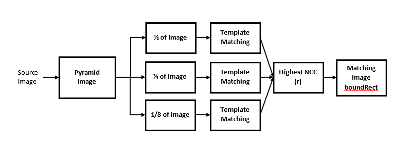
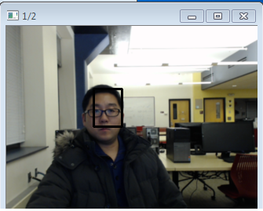
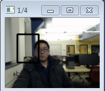
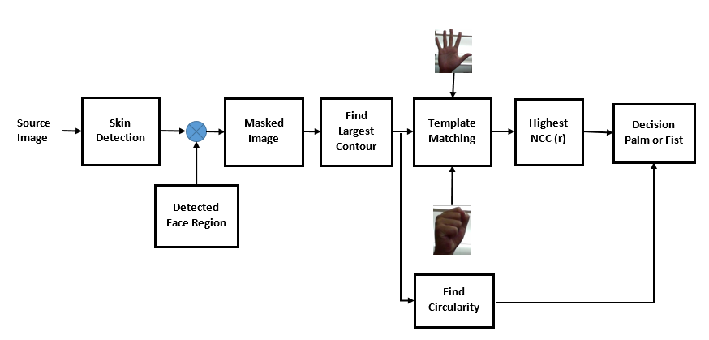
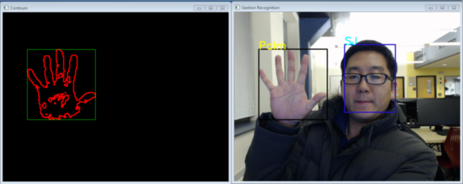

Problem Definition
Computer vision techniques provide a powerful toolbox for creating intuitive interfaces between humans and machines. In particular, computer scientists have long since tackled the question how to accurately and efficiently identify natural human gestures within the context of a dynamic visual environment. Poor lighting and color conditions can add background noise to the processed image, reducing the precision of object detection. In addition, having multiple objects in front of the camera can significantly increase the amount of processing required to obtain a successful gesture match. Solutions to combat such problems include reducing the amount of variability in the background image, as well as using context to narrow down the number of pixels that need to be searched to detect an object. Below we describe our attempt to implement some of these solutions in a simple version of a gesture detection system.
Method and Implementation
We describe general preprocessing methods used to narrow down the candidate objects for detection, then delve into more detail on the implementation of each detection method. For our system we assume there will be at most one user sitting in front of the camera, and that there will always be a face present in the image.
We first obtain an input image from the video camera. Using this image we then utilize a skin detection algorithm in order to filter out unneeded pixels in the image, producing a binary image as output. The binary image is then contour matched in order to determine the largest bounding boxes. We then perform template matching with pyramid images in order to detect faces.
Face Detection (Sang-Joon)
The face detection algorithm uses the template matching method to detect the location of the face in the image. The algorithm uses the pyramid method to downsample the orignal image into 1/2, 1/4 and 1/8 of the size and find the most correlated region in the image with the face. An image of a face is used a template and it is used to calculated the Normalize Correlation Coefficient of the source input image. The following is an overview of the described algorithm:

The following illustrates the output of downsampled image into 1/2, 1/4 and 1/8 of the original size. 
The following normalized correlation coefficient was used to calculate the NCC value for each of the downsampled image.

matchTemplate(s_img, t_img, result, match_method);
Here, match_method = 5, i.e. Normalized Correlation Coefficient method. You can find more information about 'matchTemplate' function on following OpenCV documentation: OpenCV matchTemplate
The following is an example of detected image with 1/2 downsample image. As the subject in the video moves further away from the camera, higher resolution image is used. As the subject moves close to the camera, an lower resolution image is used to match the size of the template image.

Palm & Fist Gesture Recognition (Sang-Joon)
A gesture recognition algoritm was implemented to distinguish between a palm and a fist of a hand in an image. The following figure illustrates the gesture recongition algorithm:

This algorithm uses skin detection algorithm to find the region of area that we suspect there will be a hand gesture. Our assumption is that there will be a person in the image with a face included as part of the image. We use the information from the Face detection algorithm and masks the area of detected face in the image such that we can eliminate the face portion othe hand gesture detection. We, then, use this image to get the largest contour to assume that the largest detected skin in the image is a hand.
A template matching is performed against both palm and fist. The output of the higher NCC value is considered as an input the decision making algorithm. Another parameter that is used for decision making is the circularity of the object. We take the contour area of detected hand gesture and calculate the circularity of the hand using the following equation:
Circularity
A = Area
P = Perimeter
T = 4 * Pi(A / P ^ 2)
The following is an example output of the gesture recognition algorithm.

Wave (Tyrone Hou)
Because facial recognition detects a static object in the image as opposed to movement, we decided to first subtract the face from images used for subsequent processing. This increases the accuracy of other gestures by removing potential object candidates. Once the face has been correctly subtracted, the largest bounding box can be selected from the remaining contours of the image. The projections and moments of the region of interest can then be computed using the formulas given in Freeman et. al. Using the moments we calculate an orientation angle theta and angular velocity for the hand, which is then thresholded to detect a wave gesture.
Vertical Motion(Srivathsa )
Give a concise description of the implemented method. For example, you might describe the motivation of current idea, the algorithmic steps or any formulation used in current method. Design: The video resolution of the Mat data structure in opencv is 640 * 480. The width 640 pixels is divided into 10 columns. These 10 vertical segments will be of 64 pixels each. The height 480 pixels is divided into 8 rows. These 8 row segments will be of 60 pixels each. A timer is set to every 6000 milli seconds. The frames are super imposed on the previous frame creating a overlapped frame window. This window is reset at every time interval. At the end of the time interval, all the pixels on the window are evaluated (in binary fashion - white or black) by traversing through each pixel through a row - column loop. For every vertical segment, the intensity of the pixel is found and added up. We form the vertical segment cumulative pixel count of whiote pixels. For every vertical segment, each row segment is traveresed to find the pixel density of each block or cell (64*60). If the pixel density of each block is greater than a threshold (50 or 60 %), the block id flagged as a positive match. Similarly, for every adjacent block and segments, if the block density is white throughout the columns, we assign a positive value as probability. This probability if greater than 0.75, a vertical gesture is detected. * Could not integrate it with the main code. So dropped the implementation due to lack of time. Just outlined the pusedo code approach. *
Experiments
For our experiment we recorded a video showing various gestures and positions of the user’s face around the screen. For each gesture we recorded either a success or fail depending on whether the system managed to detect the gesture. We recorded a 3x3 confusion matrix for the fist, palm, and wave gestures, and a 1x1 confusion matrix for the face dectection gesture. In total we performed 40 trials for the fist, palm, and wave gestrues and 20 trials for face detection.
For evaluation metrics we caculated the true and false positive rates, accuracy, and precision for each confusion matrix.
Results
Confusion Matrices
Palm, Fist, Wave
| Palm | Fist | Wave | None | |
| Palm | 10 | 0 | 0 | 0 |
| Fist | 4 | 7 | 1 | 0 |
| Wave | 0 | 0 | 9 | 1 |
| None | 2 | 3 | 3 | 0 |
Face Detection
| Face | None | |
| Face | 10 | 2 |
| None | 3 | 5 |
Evalution Statistics
Palm
- TP rate: 10 / 16 = 0.63
- FP rate: 0 / 24 = 0.0
- accuracy: 34 / 40 = 0.85
- precision: 10 / 10 = 1
Fist
- TP rate: 7 / 10 = .7
- FP rate: 5 / 21 = .24
- accuracy: 23 / 31 = .74
- precision: 7 / 12 = .58
Wave
- TP rate: 9 / 13 = .69
- FP rate: 1 / 15 = .07
- accuracy: 23 / 28 = .82
- precision: 9 / 10 = .9
Face Detection
- TP rate: 10 / 13 = .77
- FP rate: 2 / 7 = .29
- accuracy: 15/20 = .75
- precision: 10/12 = .83


Discussion
Wave Detection
The wave detection algorithm worked very well in terms of performance. It was able to calculate and determine the movement of the hand horizontally. There were few cases when the wave gestures were not detected at small movement. It uses a simple threholding mechanism on the velocity of the hand to determine the angle of the hand. This could be improved by calculating the acceleration of the object.
Face Detection
The face detection algorithm performed relatively well under different environment condition such as back ground. We can see from the confusion matrix that there were large number of true positive and and true negatives. The algorithm was able to detect when face was in difference distance away from the camera as well as recognize that face was absent from the image. However, the performance of the algorithm was not perfect. When the subject's face was in different lighting condition, it was difficult to match the image properly. For example, when there was a person with cloth that had similar to color of the face it was not finding the right image. This can be improve by using adaptive thresholding and also performing detection using gray color scale image.
Vertical Motion
What are the strengths and weaknesses of your method? Difficult to integrate with other gestures we implemented. The frame rate is very high compared to other gestures which are close to real-time detection as opposed to this timed recognition. Do your results show that your method is generally successful or are there limitations? Describe what you expected to find in your experiments, and how that differed or was confirmed by your results. The method is easy to implement. Does not use library functions. Needs a lot of trial and error to get the assignment of probabilities right. Vertical motion is easily identified owing to the nature of hand movement. Hand/palm is vertically oriented and slim. For horizontal motion detection, the arm causes inadvertent pixel illumination or whitening. Potential future work. How could your method be improved? What would you try (if you had more time) to overcome the failures/limitations of your work? Improvements: Division of screen into smaller horizontal and vertical segments. Probability assignment more precisely based on the pattern of waving. Variation: Use of motion energy to detect wave. Error checking and optimization. Horizontal and vertical motion can be implemented in a single function making the code concise. This needs quite a few parameters and could potentially induce silly bugs in code thereby requiring more testing time.
Conclusions
Based on our results we conclude that our system needs work to include more variability. Computer vision is hard.
Credits and Bibliography
http://docs.opencv.org/2.4/modules/imgproc/doc/imgproc.html
W. T. Freeman , D. Anderson , P. Beardsley , C. Dodge , H. Kage , K. Kyuma , Y. Miyake , M. Roth , K. Tanaka , C. Weissman , W. Yerazunis IEEE Computer Graphics and Applications, 18(3):42-53, May 1998.